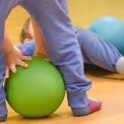
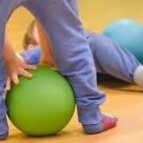

psicomotricità relazionale

che cos'è.
La Psicomotricità Relazionale è una disciplina organizzatrice e interpretativa dello sviluppo in età evolutiva. Il bambino infatti, attraverso il movimento e il gioco, scopre il proprio corpo ed il mondo che lo circonda.
Propone un’educazione globale attenta in particolare ai nuclei psico-affettivi e sociali del bambino, privilegia infatti il gioco psico-motorio di gruppo e la relazione corporea, appare quindi, l'attività pedagogica idonea a favorire lo sviluppo armonico della personalità.

I percorsi di Psicomotricità Relazionale prevedono lo sviluppo del gioco psicomotorio nei suoi 3 aspetti principali:
- IL GIOCO SENSOMOTORIO
- IL GIOCO SIMBOLICO
- IL GIOCO DI SOCIALIZZAZIONE
 

bambini dei primi due anni di scuola primaria 6-8 anni
Il bambino nel periodo che intercorre tra i 3 e i 6 anni fa un importante passo in avanti nel processo maturativo: supera la posizione egocentrica tipica della prima infanzia anche acquisendo modalità relazionali-comunicative sempre più funzionali; si apre alla socializzazione, mettendosi in sintonia con il mondo che lo circonda; entra nella fase edipica, durante la quale matura aspetti peculiari dell’identità sessuale che gli permettono di consolidare la propria personalità e le proprie caratteristiche di genere.
Questo è un momento complesso e difficile della crescita; il bambino procede per prove ed errori, alterna vissuti regressivi, durante i quali abbisogna delle cure e della vicinanza dell’adulto, a momenti di affermazione in cui si propone in modo determinato e a volte aggressivo.
E’ un’esperienza di natura prevalentemente emotiva e affettiva vissuta attraverso il corpo e il movimento. In questo periodo il gioco riveste una fondamentale importanza, è la vita stessa del bambino. Infatti attraverso l’attività ludica impara a esprimere e poi a dominare le emozioni, esprime la propria creatività, affina le modalità comunicative, migliorando le relazioni con i coetanei e gli adulti.
Resilienza o resistenza?
Il bambino nel periodo di permanenza alla Scuola Primaria attraversa una tappa fondamentale del processo maturativo: amplia e consolida la dimensione psico-affettiva e ciò facilita lo sviluppo dell’area cognitiva e la socializzazione. In particolare, le modalità di comunicazione ed espressive, fino ad ora prevalentemente globali, mediate dal corpo, dal movimento e dalla necessità di contatto corporeo, si trasformano in forme di relazione più elaborate guidate dal linguaggio verbale che si fa via via più ricco e preciso.
La conoscenza del mondo attorno a sé e il modo di apprendere si trasformano, passando dall’esperienza sensoriale ed emotiva ad una realtà guidata anche dai processi mentali e cognitivi.
E’ importante favorire l’integrazione tra dimensione corporea psico-affettiva e mentale, tra la comunicazione non verbale e verbale, per aiutare il bambino a sviluppare una personalità armonica e completa, bene integrata in tutte le sue componenti.
La Psicomotricità propone un’educazione globale, attenta ai nuclei psico-affettivi e cognitivi del bambino. Privilegiando il gioco psicomotorio e simbolico, l’attività di costruzione e collaborazione appare, conseguentemente, attività pedagogica utile al superamento della dicotomia corpo-mente e a favorire lo sviluppo del bambino.